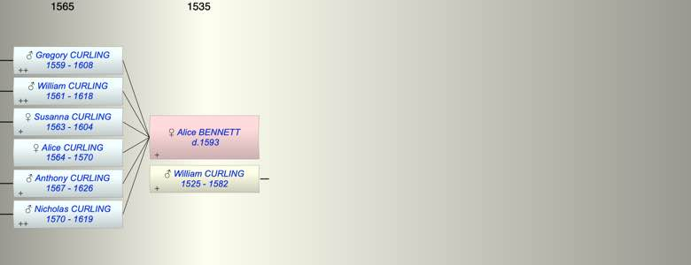

| [Index] |
| Alice BENNETT ( - 1593) |
|  |
| +. William CURLING (1525 - 1582) |
| d. 1593 |
| Children (6): |
| Gregory CURLING (1559 - 1608) |
| William CURLING (1561 - 1618) |
| Susanna CURLING (1563 - 1604) |
| Alice CURLING (1564 - 1570) |
| Anthony CURLING (1567 - 1626) |
| Nicholas CURLING (1570 - 1619) |
| Events in Alice BENNETT ( - 1593)'s life | |||||
| Date | Age | Event | Place | Notes | Src |
| Alice BENNETT was born | Note 1 | ||||
| abt 1559 | Birth of son Gregory CURLING | ||||
| abt 1561 | Birth of son William CURLING | ||||
| 1563 | Birth of daughter Susanna CURLING | St Laurence | Note 2 | ||
| 1564 | Birth of daughter Alice CURLING | St Laurence | Note 3 | ||
| 1567 | Birth of son Anthony CURLING | St Laurence | Note 4 | ||
| 1570 | Birth of son Nicholas CURLING | St Laurence | Note 5 | ||
| 1570 | Death of daughter Alice CURLING (aged 6) | St Laurence | Note 6 | ||
| 1582 | Death of husband William CURLING (aged 57) | Note 7 | |||
| 1593 | Alice BENNETT died | Note 8 | |||
| Personal Notes: |
|
The will of Alice (widow of Willaim) dated 10 Dec 1592 was proved 6 June 1593 [A49/205].
To be buried in churchyard at St Laurence. Son Gregory her furnished coslet (closet?). Son Anthony table & bench, feather bed, blanket, sheets, candlesticks, wine bottle plates and a pewter dish her land and tenements in St Peters and land bought from John Curling. Son Nicholas feather bed and sheets etc. Daughter Susan wife of William Swinford, a bond and wearing apparel and 20/- money. Grandson Edward, son of R...er under 21 one cow bought from William a fleete, 2 chests, bedding, plates, pewter dish and candlesticks and £10, all except the cow to be kept by William until Edward is 21. William to be his governor until he comes of age. Son William to have the rest of her movable goods provided he takes charge of bringing up Edward. If Edward dies before age 21 or if her son Anthony predeceases her, William and Nicolas are to inherit the land and residue, sharing the bequest equally, but contributing 1 shilling each towards Edward’s maintenance when he comes to the age of 21. |
| Created on a Mac™ using iFamily for Mac™ on 8 Oct 2023 |